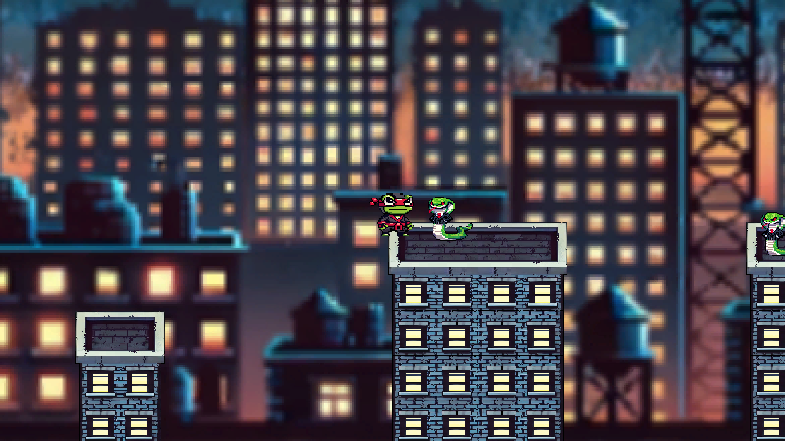

Too Late?
This 3D environment is what I see as a successor to my Raft project. I aimed to focus more on details in the water and put more focus on lighting as well.
Link to animation:
Watch Here
Made using Blender.
3D Environment & Animation
"LIFERAFT" by tomian:
Find Here.
Liminal Shift
Solo Game Project - In development
This is being made for an upcoming DMA group exhibition called "Digital Illusions".
Link to Game:
Download Here
Made using Unreal Engine 5

The Silent Guest
Lead Designer & 3D Artist and & Sound Design
This was a collaborative game project with 3 other peers and myself for our Art 108 - Game Studies class. This game was made with a three week development window.
Link to Game:
Download Here.
Made using Unity

Night Lit Street
This 3D render was my attempt of composing a realistic urban environment with the added components of human models as well as procedural geometry nodes to help elevate the composition of an living city street, the addition of rain adds another level of making the image dynamic.
Made using Blender

Anomaly
Inspired by the Spider-Man multiverse, this project places my Art 102 character in a mismatched cartoon world using Blender’s Grease Pencil. The contrast highlights the character’s displacement, expanding my artistic skills in stylized environments.
Made using Blender

Todo vs Snake Yazuka
Lead Designer & 2D Artist and & Sound Design
This was a collaborative game project with another partner for our Art 108 - Game Studies class. This game was made with a three week development window.
Link to Game:
Play Here.
Made using Unity

Mauris id tellus arcu
Nunc blandit nisi ligula magna sodales lectus elementum non. Integer id venenatis velit.

Nunc vehicula id nulla
Nunc blandit nisi ligula magna sodales lectus elementum non. Integer id venenatis velit.

Neque et faucibus viverra
Nunc blandit nisi ligula magna sodales lectus elementum non. Integer id venenatis velit.

Mattis ante fermentum
Nunc blandit nisi ligula magna sodales lectus elementum non. Integer id venenatis velit.

Sed ac elementum arcu
Nunc blandit nisi ligula magna sodales lectus elementum non. Integer id venenatis velit.

Vehicula id nulla dignissim
Nunc blandit nisi ligula magna sodales lectus elementum non. Integer id venenatis velit.


{kind=link}
{kind=link}